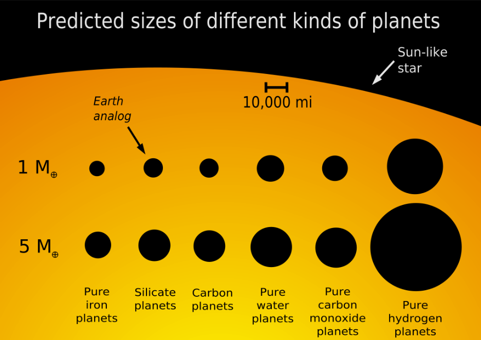
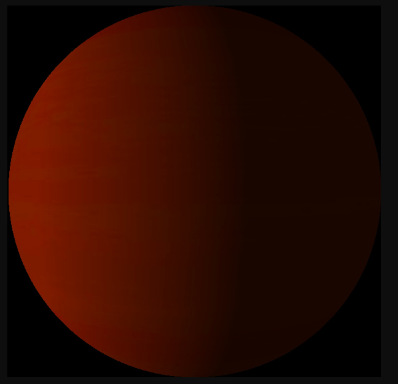
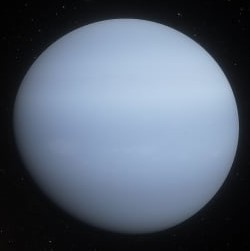
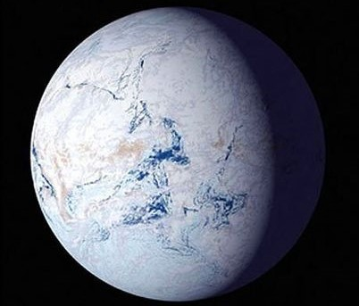
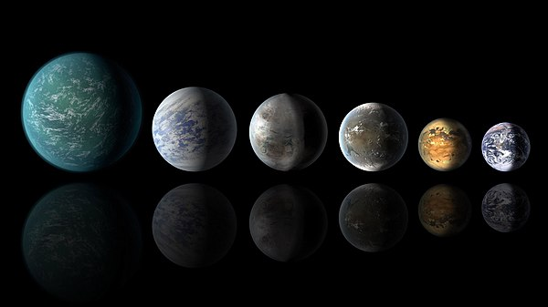
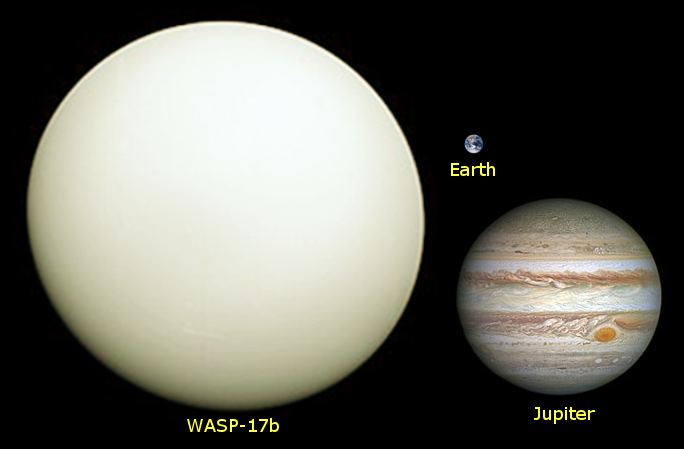

Planets are large celestial objects which revolved around a particular star and are usually spheroid in shape. The most commonly known planets are the eight that make up our solar system: Jupiter, Saturn, Uranus, Neptune, Earth, Venus, Mars, and Mercury. However, there are many more planets that exist outside of our solar system. Astronomers have come up with many criteria they use to classify these planets, one criterion is classifying the planets based on their composition.
There are 17 different types of planets on the basis of composition. These are chthonian planets, carbon planets, city planets, coreless planets, desert planets, gas dwarfs, gas giants, helium planets, ice giants, ice planets, iron planets, lava planets, ocean planets, protoplanets, puffy planets, silicate planets, and terrestrial planets

Chthonian Planet
Chthonian planets are celestial objects revolving close to a star which was originally gas giants but had their helium and hydrogen atmospheres stripped away by high temperatures emanating from their respective nearby stars leaving behind a metallic and rocky core. There are no chthonian planets in our solar system, but there are several such planets that have been observed including Kepler-57b and Kepler-52b.

Carbon Plane
A carbon planet is a theoretical planet that is believed to have a higher concentration of carbon than oxygen in its composition. Such planets are also thought to have cores made of iron or steel, characteristic to terrestrial planets. The surface of these planets is believed to be covered by liquid or frozen hydrocarbons with a layer of graphite or diamonds several miles thick beneath the surface. A suitable candidate of a carbon planet is the 55 Cancri e planet.
Coreless Planet
As its name suggests, a coreless planet is a planet without a core. This hypothetical type of planet is exclusively made up of a mantle.
Desert Planet
Desert planets are terrestrial planets whose surfaces have desert-like conditions. Such planets are believed to have a bigger habitable zone than Earth-like watery planets. The concept of desert planets has been portrayed in modern works of fiction such as the 1965 novel “Dune.” Some astronomers believe that the Earth will eventually become a desert planet as the Sun increases in luminosity. Venus is also believed to have been a desert planet in the past.
Dwarf Planet
Dwarf planet, body, other than a natural satellite , that orbits the Sun and that is, for practical purposes, smaller than the planet Mercury yet large enough for its own gravity to have rounded its shape substantially. The International Astronomical Union (IAU) adopted this category of solar system bodies in August 2006, designating Pluto, the even more-remote object Eris, and the asteroid Ceres as the first members of the category. Unlike major planets, these bodies are not massive enough to have swept up most smaller nearby bodies by gravitational attraction; they thus failed to grow larger. The IAU agreed to establish a process for determining which other bodies presently known or to be discovered are dwarf planets. In June 2008 the IAU created a new category, plutoids, within the dwarf planet category. Plutoids are dwarf planets that are farther from the Sun than Neptune. All the dwarf planets except Ceres are plutoids; because of its location in the asteroid belt, Ceres is not. For a discussion of the formal conditions set out by the IAU for a body to be a dwarf planet, see planet.
Gas Dwarf
A gas dwarf is a celestial body with a solid core but covered by a thick atmosphere made up of helium, hydrogen and other volatile gases. The gas dwarf is similar in composition to the gas giant planets and only differs in size. One example of a gas dwarf is Kepler-138d which is an extrasolar planet.
Gas Giant
Gas giants are planets which are mainly made up of helium and hydrogen and other volatile compounds. These planets which exist in immense sizes are some of the largest known planets. Our solar system has two planets that are classified as gas giants, and these are Saturn and Jupiter. These planets are believed to have a molten rocky core. However, the properties of the compounds that exist in the cores of these gas giants are poorly understood due to the great temperatures and pressure.
Helium Planet
A helium planet has an atmosphere that is predominantly made up of helium. Scientists believe such planets are formed after high temperatures of a nearby star cause the evaporation and disappearance of lighter gases including hydrogen and leave behind an atmosphere made up of helium. Due to the high concentration of helium in the atmosphere, helium planets are believed to be white and light-gray in appearance.

Ice Giant
Ice giants are planets which are mainly composed of dense gases which are heavier than those found in gas giants. These planets which were initially categorized as gas giants were established to be distinct in composition as they are primarily made up of carbon, sulfur, oxygen, and nitrogen instead of the hydrogen and helium found in gas giants. Neptune and Uranus are the two ice giants of our solar system.
Ice Planet
An ice planet is is predominantly made up of volatile compounds such as water, methane, and ammonia in their frozen states. These planets experience extremely low temperatures (below negative (-) 13 degrees Celsius). Our solar system does not have any ice planets, as the only icy objects which have these characteristics are too small to be classified as planets. Ice planets are key candidates of the presence of extraterrestrial life as scientists believe these planets have sub surface oceans which have conditions suitable to accommodate life.

Iron Planet
An iron planet is a type of planet which is mainly made up of its iron-rich core. Such planets are also recognized for the limited presence or complete absence of a mantle. Scientists believe that these types of planets were initially terrestrial planets but had their mantles stripped away as a result of giant impacts. Mercury is the only iron planet in our solar system.
Lava Planet
Lava planet is a theoretical type of planet which is characterized by the presence of molten lava covering its surface. These planets are believed to have intense volcanic activity as a result of a recent large collision event or a planet in its infancy. These planets are also believed to exist within proximity of their respective stars.
Ocean Planet
An ocean planet is a hypothetical type of planet which is thought to be wholly or predominantly covered by water. These planets have 10% of their mass being water (water accounts for only 0.05% of the Earth’s mass). Ocean planets have oceans hundreds of miles in depth.

Protoplanet
A protoplanet are large celestial bodies which were formed as a result of the collision of planetesimals and are also known are planet embryos. There are no established protoplanets in our solar system with the closest equivalent being asteroids such as Pallas and Vesta.
Puffy Planet
Puffy planets are gas giants which exist close to their stars and temperatures from the stars cause their atmospheres to expand and result in such planets having a large equatorial radius but relatively low densities. There are no such planets in the solar system, but few have been discovered beyond our solar system including WASP-12b and WASP 17b.

Silicate Planet
A silicate planet is primarily made up of silicate compounds. These planets are characterized by a solid crust, a silicate mantle, and an iron-based core. Depending on the presence of tectonic and volcanic activity, these planets can also have mountains, canyons, and valleys. All the four planets closest to the Sun (Mercury, Venus, Earth, and Mars) are categorized as silicate planets.
Terrestrial Planet
A terrestrial planet is the broader classification of silicate planets as they have solid surfaces. The composition of the core of terrestrial planets is also diverse with some being made of iron while others are made of carbon-based compounds. However, there are terrestrial planets which do not have a core which is known as coreless planets.
A satellite is anything that orbits around a larger object. A natural satellite is any celestial body in space that orbits around a larger body. Moons are called natural satellites because they orbit planets.
Satellites that are made by people and launched into orbit using rockets are called artificial satellites. There are thousands of artificial satellites orbiting the Earth.
Any large object that orbits around a planet is called a moon (small ‘m’). The Earth has one moon called the Moon (capital ‘M’). The Moon takes 27.3 days to orbit the Earth once, moving at an orbital speed of 1 km/s.
Galileo was the first person to discover that other planets can have moons. He saw that Jupiter had four moons with his newly invented telescope in 1610 AD. At first, he thought they were stars, but he noticed that, each night, the four points of light appeared to change positions slightly. He realised they were actually moons orbiting around Jupiter. Another astronomer of the time, Simon Marius, named them Io, Europa, Ganymede and Callisto after the lovers of Zeus, the ancient Greek mythological King of the Gods and Men. We now know that Jupiter has at least 64 moons.
All except two of the planets (Venus and Mercury) in our Solar System have natural satellites called moons.
Planets, asteroids and comets orbit around stars such as our Sun and so can also be thought of as natural satellites. Our Solar System has eight official planets as well as millions of minor planets, asteroids, comets and other objects orbiting around the Sun. All of these can be thought of as natural satellites.
All of these natural satellites are held in orbit by the attraction of gravity between the satellite and the object it is orbiting.
A galaxy is a huge collection of gas, dust, and billions of stars and their solar systems, all held together by gravity.
We live on a planet called Earth that is part of our solar system. But where is our solar system? It’s a small part of the Milky Way Galaxy.
A galaxy is a huge collection of gas, dust, and billions of stars and their solar systems. A galaxy is held together by gravity. Our galaxy, the Milky Way, also has a suppermassive black hole in the middle.
There are many galaxies besides ours, though. There are so many, we can’t even count them all yet! The hubble space telescope looked at a small patch of space for 12 days and found 10,000 galaxies, of all sizes, shapes, and colors. Some scientists think there could be as many as one hundred billion galaxies in the universe.
Some galaxies are spiral-shaped like ours. They have curved arms that make it look like a pinwheel. Other galaxies are smooth and oval shaped. They’re called elliptical galaxies. And there are also galaxies that aren’t spirals or ovals. They have irregular shapes and look like blobs. The light that we see from each of these galaxies comes from the stars inside it.
FOUR GALAXY CLASSIFICATIONS
As discussed in the section on galaxy classifications, Hubble found four distinct types of galaxies: elliptical, spiral, spiral barred and irregular. Although there are different types, we also learned that each galaxy contains the same elements, but these are arranged differently for each type. Just as every human is created with the same proteins that are configured uniquely, so are the galaxies uniquely configured with gasses, dust, stars and other elements.
SPIRAL GALAXY
Spiral galaxies are easily identified by observing three components common to all spiral galaxies. A spiral galaxy has a disk, a bulge, and a halo. The center of the galaxy is like a nucleus, containing a sphere shaped bulge that houses old stars and is devoid of dust and gas. The circular shape of the galaxy composes the disk. The arms of the spiral galaxy originate in the disk and are where new stars will form in a galaxy.
The sun in our galaxy is located in one arm and its stars are created in this portion of the galaxy, which contains the most gas in the galaxy. This area is rich in blue stars. The Halo is a spherical shaped collection of old stars and clusters known as globular clusters that is found in the outer edge of the galaxy. This stunning view of Spiral Galaxy Messier 74 from NASA taken with the Hubble telescope shows a bright bulge in the center with the arms spiraling outward.
When a spiral galaxy has no arms, S0, it is termed lenticular. These galaxies are so similar to E7 that identifying them can be tricky. Lenticular galaxies also occur with barred spiral and are classified as SB0. Spiral galaxies are the most common galaxy of the known universe, comprising about 77% of all known galaxies.
BARRED SPIRAL GALAXY
Barred spiral galaxies share the same features and functions as regular spiral galaxies, but they also have a bar of bright stars that lie along the center of the bulge, and extend into the disk. The bright bulge has very little activity here and contains mostly older, red stars. The bar and arms have lots of activity.including star formation.
While the classification for barred spirals is the same as it is for regular spiral galaxies, the bar must be considered as well. Short bars correlate to tighter galaxies and will be included in the designation SBa. SBb have longer bars and SBc are the longest. Most astronomers now agree that the Milky Way is a barred spiral galaxy.
ELLIPTICAL GALAXY
Elliptical galaxies can be recognized by their elongated spherical shape and their lack of nucleus or bulge at the center. Although there is no nucleus, the galaxy is still brighter in the center and becomes less bright toward the outer edges of the galaxy. Stars, gases and other materials are spread throughout the elliptical galaxy. An elliptical galaxy can be nearly round or long and cigar shaped.
It is believed that a great deal of the mass in an elliptical galaxy is due to the presence of a central black hole. These galaxies have very little activity and contain mostly old stars of low mass, because there aren’t the gasses and dust needed to form new stars.
IRREGULAR GALAXY
Irregular galaxies are composed of gasses, dust, stars, nebulous formations, neutron stars, black holes and other elements common to all galaxies. Irregular galaxies are named so because they have no definite shape, but like all galaxies, they are in constant motion, moving outward and away from the center of our universe. Irregular galaxies are divided into two classifications: Im and IO.
Im galaxies occur most often among irregular galaxies and may show a trace of the spiral galaxy arms. IO galaxies are completely random and can be called chaotic in nature. The Magellanic clouds that border our own Milky Way Galaxy are examples of Im galaxies. Approximately 20% of our galaxies are classified as irregular.
A black hole is a place in space where gravity pulls so much that even light can not get out. The gravity is so strong because matter has been squeezed into a tiny space. This can happen when a star is dying.
Because no light can get out, people can't see black holes. They are invisible. Space telescopes with special tools can help find black holes. The special tools can see how stars that are very close to black holes act differently than other stars.
How Big Are Black Holes?
Black holes can be big or small. Scientists think the smallest black holes are as small as just one atom. These black holes are very tiny but have the mass of a large mountain. Mass is the amount of matter, or "stuff," in an object.
Another kind of black hole is called "stellar." Its mass can be up to 20 times more than the mass of the sun. There may be many, many stellar mass black holes in Earth's galaxy. Earth's galaxy is called the Milky Way.
The largest black holes are called "supermassive." These black holes have masses that are more than 1 million suns together. Scientists have found proof that every large galaxy contains a supermassive black hole at its center. The supermassive black hole at the center of the Milky Way galaxy is called Sagittarius A. It has a mass equal to about 4 million suns and would fit inside a very large ball that could hold a few million Earths.
How Do Black Holes Form?
Scientists think the smallest black holes formed when the universe began.
Stellar black holes are made when the center of a very big star falls in upon itself, or collapses. When this happens, it causes a supernova. A supernova is an exploding star that blasts part of the star into space.
Scientists think supermassive black holes were made at the same time as the galaxy they are in.
If Black Holes Are "Black," How Do Scientists Know They Are There?
A black hole can not be seen because strong gravity pulls all of the light into the middle of the black hole. But scientists can see how the strong gravity affects the stars and gas around the black hole. Scientists can study stars to find out if they are flying around, or orbiting, a black hole.
When a black hole and a star are close together, high-energy light is made. This kind of light can not be seen with human eyes. Scientists use satellites and telescopes in space to see the high-energy light.
Could a Black Hole Destroy Earth?
Black holes do not go around in space eating stars, moons and planets. Earth will not fall into a black hole because no black hole is close enough to the solar system for Earth to do that.
Even if a black hole the same mass as the sun were to take the place of the sun, Earth still would not fall in. The black hole would have the same gravity as the sun. Earth and the other planets would orbit the black hole as they orbit the sun now.
The sun will never turn into a black hole. The sun is not a big enough star to make a black hole.
Supermassive
There's a supermassive black hole at the center of our galaxy. It can't be seen directly through telescopes or with our eyes, but astronomers know it's there. In fact, there are supermassive black holes at the hearts of many galaxies. How do astronomers know these monsters lurk in the galactic cores? They use a variety of methods to study light as it passes by a black hole and they also study the region around a black hole to understand how it affects nearby clouds of gas, dust, and even stars. Currently, the supermassive black hole in the Milky Way, called Sagittarius A*, is a fairly quiet one, and astronomers monitor it in many wavelengths of light to understand its actions.
What Are Supermassive Black Holes?
Generally, supermassive black holes are just what their name says: really, really massive black holes. They measure in the hundreds of thousands of solar masses (one solar mass equals the mass of the Sun) up to billions of solar masses. They possess immense power and wield incredible influence over their galaxies.
Most supermassive black holes exist in the cores of galaxies. That central location allows them to (at least partially) help hold galaxies together. Their gravity is so immense, because of their incredible mass, that even stars hundreds of thousands of light years away are bound in orbit around them and the galaxy cores they inhabit.
Black Holes and Their Incredible Densities
Whenever astronomers talk about black holes, the main property they use that sets black holes apart other "normal" objects in the universe is density. This is the amount of "stuff" packed into the volume of a black hole. The density at the cores of black holes is so high that it essentially becomes infinite. Specifically, the volume (the amount of space a black hole and its hidden mass takes up) approaches zero. That means it's little more than a tiny pinpoint in space, but that tiny dot, called a singularity, contains an incredible amount of mass. That makes it incredibly dense. That density is spread out throughout the entire region of the black hole, from the singularity to the event horizon (which is the point where the gravity of the black hole is too strong for anything to resist.
That sounds as if the interior of the black hole (beyond the event horizon) could be incredibly crushed, with no room. Interestingly, there's a thought experiment that says the average density of supermassive black holes can actually be less than the very air humans breathe. In fact, the greater the mass, the less dense the supermassive black hole is, if one considers the whole volume of the area from the singularity to the event horizon. The mass would be distributed through that region, with more mass at the singularity than in the "outskirts."
If that's true, then it would not only be possible to approach a supermassive black hole, one could theoretically fall into a supermassive black hole and survive for quite some time until getting close to the singularity. However, there's one big problem: gravity. It's so strong that anything swooping past the event horizon would be torn apart by the extreme gravitational pull. So much for wormhole travel!
How Do Supermassive Black Holes Form?
The formation of supermassive black holes is still one of the mysteries of astrophysics. Normal black holes are the core remnants left behind from the supernova explosion of a massive star. The more massive the star, the more massive the black hole left behind.
One could, therefore, assume that supermassive black holes are created from the collapse of a supermassive star. The problem is that few such stars have been detected. Moreover, physics tells us that they shouldn't even exist in the first place. However, they do. The most massive stars are dozens to a hundred times the mass of the Sun. A few rare hypergiants may be up to 300 stellar masses. Still, even these monsters are a far cry from the types of masses that would be needed to create a supermassive black hole. To put it bluntly: a LOT more mass is needed to make a supermassive black hole than is contained in even the most supermassive stars.
So, if these objects aren't created in the traditional fashion of other black holes, where do the monster black holes come from? The leading idea is that they formed as much-smaller black holes to build big ones. Eventually, the build-up of mass would lead to the creation of a supermassive black hole. That is a hierarchical theory of building a supermassive black hole. There are some problems with that theory because it requires the study of "intermediate mass" supermassive black holes. They would be the "in b between step" from smaller black holes to the supermassive monsters. Astronomers are starting to detect more of these and study their particular characteristics to fill in the gaps in the hierarchical theory.
Black Holes, the Big Bang, and Mergers
Another leading theory about the creation of supermassive black holes is that they formed in the first moments following the Big Bang. Of course, not everything is completely understood about the conditions during that time in order to figure out how black holes played a role and what spurred their formation.
Observations of the known supermassive and intermediate-mass black holes suggest that the merger theory is likely the simplest explanation. Examination of the oldest, most distant and massive supermassive black holes, quasars specifically, shows there is evidence that the merger of many galaxies played a role. When galaxies merge, it appears their black holes do, too. Mergers play a role in shaping the galaxies we see today, and so it makes sense that their central black holes may come along for the ride and grow along with the galaxies. Interestingly, when those black holes merge, they send out a lot of energy. The action also emits gravitational waves, which astronomers are just now able to measure.
If mergers are the answer, then they supply a partial solution to the intermediate black hole problem. In either case, the answer is not clear, yet. Much more work needs to be done to observe and characterize galaxies and their black holes.
Supermassive black holes exist at the hearts of many galaxies, including the Milky Way.
Some galaxies, such as the Andromeda Galaxy, may have more than one of these monsters.
When galaxies merge, their black holes can merge, too.
Supermassive black holes can have up to billions of stellar masses hidden inside.
Our own Milky Way has a supermassive black hole called Sagittarius A*
These luminous balls of gas helped ancient explorers navigate the seas and now help modern-day scientists navigate the universe.
Stars are huge celestial bodies made mostly of hydrogen and helium that produce light and heat from the churning nuclear forges inside their cores. Aside from our sun, the dots of light we see in the sky are all light-years from Earth. They are the building blocks of galaxies, of which there are billions in the universe. It’s impossible to know how many stars exist, but astronomers estimate that in our Milky Way galaxy alone, there are about 300 billion.
The life cycle of a star spans billions of years. As a general rule, the more massive the star, the shorter its life span.
Birth takes place inside hydrogen-based dust clouds called nebulae. Over the course of thousands of years, gravity causes pockets of dense matter inside the nebula to collapse under their own weight. One of these contracting masses of gas, known as a protostar, represents a star’s nascent phase. Because the dust in the nebulae obscures them, protostars can be difficult for astronomers to detect.
As a protostar gets smaller, it spins faster because of the conservation of angular momentum—the same principle that causes a spinning ice skater to accelerate when she pulls in her arms. Increasing pressure creates rising temperatures, and during this time, a star enters what is known as the relatively brief T Tauri phase.
Millions of years later, when the core temperature climbs to about 27 million degrees Fahrenheit (15 million degrees Celsius), nuclear fusion begins, igniting the core and setting off the next—and longest—stage of a star’s life, known as its main sequence.
Most of the stars in our galaxy, including the sun, are categorized as main sequence stars. They exist in a stable state of nuclear fusion, converting hydrogen to helium and radiating x-rays. This process emits an enormous amount of energy, keeping the star hot and shining brightly.
Some stars shine more brightly than others. Their brightness is a factor of how much energy they put out–known as luminosity–and how far away from Earth they are. Color can also vary from star to star because their temperatures are not all the same. Hot stars appear white or blue, whereas cooler stars appear to have orange or red hues.
By plotting these and other variables on a graph called the Hertzsprung-Russell diagram, astronomers can classify stars into groups. Along with main sequence and white dwarf stars, other groups include dwarfs, giants, and supergiants. Supergiants may have radii a thousand times larger than that of our own sun.
Stars spend 90 percent of their lives in their main sequence phase. Now around 4.6 billion years old, Earth’s sun is considered an average-size yellow dwarf star, and astronomers predict it will remain in its main sequence stage for several billion more years.
As stars move toward the ends of their lives, much of their hydrogen has been converted to helium. Helium sinks to the star's core and raises the star's temperature—causing its outer shell of hot gases to expand. These large, swelling stars are known as red giants. But there are different ways a star’s life can end, and its fate depends on how massive the star is.
The red giant phase is actually a prelude to a star shedding its outer layers and becoming a small, dense body called a white dwarf. White dwarfs cool for billions of years. Some, if they exist as part of a binary star system, may gather excess matter from their companion stars until their surfaces explode, triggering a bright nova. Eventually all white dwarfs go dark and cease producing energy. At this point, which scientists have yet to observe, they become known as black dwarfs.
Big bang
Massive stars eschew this evolutionary path and instead go out with a bang—detonating as supernovae. While they may appear to be swelling red giants on the outside, their cores are actually contracting, eventually becoming so dense that they collapse, causing the star to explode. These catastrophic bursts leave behind a small core that may become a neutron star or even, if the remnant is massive enough, a black hole.
Because certain supernovae have a predictable pattern of destruction and resulting luminosity, astronomers are able to use them as “standard candles,” or astronomical measuring tools, to help them measure distances in the universe and calculate its rate of expansion.
Looking up
Depending on cloud cover and where you’re standing, you may see countless stars blanketing the sky above you, or none at all. In cities and other densely populated areas, light pollution makes it nearly impossible to stargaze. By contrast, some parts of the world are so dark that looking up reveals the night sky in all its rich celestial glory.
Ancient cultures looked to the sky for all sorts of reasons. By identifying different configurations of stars—known as constellations—and tracking their movements, they could follow the seasons for farming as well as chart courses across the seas. There are dozens of constellations. Many are named for mythical figures, such as Cassiopeia and Orion the Hunter. Others are named for the animals they resemble, such as Ursa Minor (Little Bear) and Canus Major (Big Dog).
Today astronomers use constellations as guideposts for naming newly discovered stars. Constellations also continue to serve as navigational tools. In the Southern Hemisphere, for example, the famous Southern Cross constellation is used as a point of orientation. Meanwhile people in the north may rely on Polaris, or the North Star, for direction. Polaris is part of the well-known constellation Ursa Minor, which includes the famous star pattern known as the Little Dipper.
not a celestial body but actualy forms formed by patterns created by connecting some of them so it is valid to be mentioned.
A constellation is a group of stars that forms an imaginary outline or pattern on the celestial sphere, typically representing an animal, mythological person or creature, a god, or an inanimate object.
The origins of the earliest constellations likely go back to prehistory. People used them to relate stories of their beliefs, experiences, creation, or mythology. Different cultures and countries adopted their own constellations, some of which lasted into the early 20th century before today's constellations were internationally recognized. The recognition of constellations has changed significantly over time. Many have changed in size or shape. Some became popular, only to drop into obscurity. Others were limited to a single culture or nation.
The 48 traditional Western constellations are Greek. They are given in Aratus' work Phenomena and Ptolemy's Almagest, though their origin probably predates these works by several centuries. Constellations in the far southern sky were added from the 15th century until the mid-18th century when European explorers began traveling to the Southern Hemisphere. Twelve ancient constellations belong to the zodiac (straddling the ecliptic, which the Sun, Moon, and planets all traverse). The origins of the zodiac remain historically uncertain; its astrological divisions became prominent c. 400 BC in Babylonian or Chaldean astronomy.
In 1922, the International Astronomical Union (IAU) formally accepted the modern list of 88 constellations, and in 1928 adopted official constellation boundaries that together cover the entire celestial sphere. Any given point in a celestial coordinate system lies in one of the modern constellations. Some astronomical naming systems include the constellation where a given celestial object is found to convey its approximate location in the sky. The Flamsteed designation of a star, for example, consists of a number and the genitive form of the constellation name.
Other star patterns or groups called asterisms are not constellations per se, but are used by observers to navigate the night sky. Asterisms may be several stars within a constellation, or they may share stars with more than one constellation. Examples of asterisms include the Pleiades and Hyades within the constellation Taurus and the False Cross split between the southern constellations Carina and Vela, or Venus' Mirror in the constellation of Orion.
Comets are cosmic snowballs of frozen gases, rock and dust that orbit the Sun. When frozen, they are the size of a small town. When a comet's orbit brings it close to the Sun, it heats up and spews dust and gases into a giant glowing head larger than most planets. The dust and gases form a tail that stretches away from the Sun for millions of miles. There are likely billions of comets orbiting our Sun in the Kuiper Belt and even more distant Oort Cloud.
The current number of known comets is: 3,596
Comets orbit the Sun just like planets and asteroids do, except a comet usually has a very elongated orbit.
As the comet gets closer to the Sun, some of the ice starts to melt and boil off, along with particles of dust. These particles and gases make a cloud around the nucleus, called a coma.
The coma is lit by the Sun. The sunlight also pushes this material into the beautiful brightly lit tail of the comet.
In the distant past, people were both awed and alarmed by comets, perceiving them as long-haired stars that appeared in the sky unannounced and unpredictably. Chinese astronomers kept extensive records for centuries, including illustrations of characteristic types of comet tails, times of cometary appearances and disappearances, and celestial positions. These historic comet annals have proven to be a valuable resource for later astronomers.
We now know that comets are leftovers from the dawn of our solar system around 4.6 billion years ago, and consist mostly of ice coated with dark organic material. They have been referred to as "dirty snowballs." They may yield important clues about the formation of our solar system. Comets may have brought water and organic compounds, the building blocks of life, to the early Earth and other parts of the solar system.
Where Do Comets Come From?
As theorized by astronomer Gerard Kuiper in 1951, a disc-like belt of icy bodies exists beyond Neptune, where a population of dark comets orbits the Sun in the realm of Pluto. These icy objects, occasionally pushed by gravity into orbits bringing them closer to the Sun, become the so-called short-period comets. Taking less than 200 years to orbit the Sun, in many cases their appearance is predictable because they have passed by before. Less predictable are long-period comets, many of which arrive from a region called the Oort Cloud about 100,000 astronomical units (that is, about 100,000 times the distance between Earth and the Sun) from the Sun. These Oort Cloud comets can take as long as 30 million years to complete one trip around the Sun.
Each comet has a tiny frozen part, called a nucleus, often no larger than a few kilometers across. The nucleus contains icy chunks, frozen gases with bits of embedded dust. A comet warms up as it nears the Sun and develops an atmosphere, or coma. The Sun's heat causes the comet's ices to change to gases so the coma gets larger. The coma may extend hundreds of thousands of kilometers. The pressure of sunlight and high-speed solar particles (solar wind) can blow the coma dust and gas away from the Sun, sometimes forming a long, bright tail. Comets actually have two tails―a dust tail and an ion (gas) tail.
Most comets travel a safe distance from the Sun―comet Halley comes no closer than 89 million kilometers (55 million miles). However, some comets, called sungrazers, crash straight into the Sun or get so close that they break up and evaporate.
Asteroids are small, rocky objects that orbit the Sun. Although asteroids orbit the Sun like planets, they are much smaller than planets.
There are lots of asteroids in our solar system. Most of them live in the main asteroid belt—a region between the orbits of Mars and Jupiter.
Asteroids hang out in other places, too. For example, some asteroids are found in the orbital path of planets. This means that the asteroid and the planet follow the same path around the sun. Earth and a few other planets have asteroids like this.
Where did asteroids come from?
Asteroids are left over from the formation of our solar system. Our solar system began about 4.6 billion years ago when a big cloud of gas and dust collapsed. When this happened, most of the material fell to the center of the cloud and formed the sun.
Some of the condensing dust in the cloud became planets. The objects in the asteroid belt never had the chance to be incorporated into planets. They are leftovers from that time long ago when planets formed.
Are all asteroids the same?
No way! Because asteroids formed in different locations at different distances from the sun, no two asteroids are alike. Here are a few ways that they differ:
Asteroids aren’t all round like planets. They have jagged and irregular shapes.
Some asteroids are hundreds of miles in diameter, but many more are as small as pebbles.
Most asteroids are made of different kinds of rocks, but some have clays or metals, such as nickel and iron.
What can we learn from asteroids?
Since asteroids formed at the same time as other objects in our solar system, these space rocks can give scientists lots of information about the history of planets and the sun. Scientists can learn about asteroids by studying meteorites: tiny bits of asteroids that have flown through our atmosphere and landed on Earth’s surface.
Several NASA space missions have also flown by and observed asteroids. The NEAR Shoemaker spacecraft landed on Eros, an asteroid near Earth, in 2001. Then, the Dawn spacecraft traveled to the asteroid belt in 2011 to orbit and study the second largest object there, Vesta. Vesta is so large it's like a small planet. In 2012 Dawn left Vesta and went into orbit around the largest object in the asteroid belt, dwarf planet Ceres.
In 2016, NASA launched the OSIRIS-REx spacecraft to study an asteroid near Earth named Bennu and bring a sample of the asteroid back to Earth! In 2018, OSIRIS-REx went into orbit around Bennu. Bennu is the smallest world ever to be orbited by spacecraft. OSIRIS-REx will spend two years studying Bennu’s surface, looking for the best place to take a sample.
Asteroid Belt
The asteroid belt is the circumstellar disc in the Solar System located roughly between the orbits of the planets Mars and Jupiter. It is occupied by numerous irregularly shaped bodies called asteroids or minor planets. The asteroid belt is also termed the main asteroid belt or main belt to distinguish it from other asteroid populations in the Solar System such as near-Earth asteroids and trojan asteroids. About half the mass of the belt is contained in the four largest asteroids: Ceres, Vesta, Pallas, and Hygiea. The total mass of the asteroid belt is approximately 4% that of the Moon, or 22% that of Pluto, and roughly twice that of Pluto's moon Charon (whose diameter is 1200 km).
Ceres, the asteroid belt's only dwarf planet, is about 950 km in diameter, whereas 4 Vesta, 2 Pallas, and 10 Hygiea have mean diameters of less than 600 km.] The remaining bodies range down to the size of a dust particle. The asteroid material is so thinly distributed that numerous unmanned spacecraft have traversed it without incident. Nonetheless, collisions between large asteroids do occur, and these can produce an asteroid family whose members have similar orbital characteristics and compositions. Individual asteroids within the asteroid belt are categorized by their spectra, with most falling into three basic groups: carbonaceous (C-type), silicate (S-type), and metal-rich (M-type).
The asteroid belt formed from the primordial solar nebula as a group of planetesimals. Planetesimals are the smaller precursors of the protoplanets. Between Mars and Jupiter, however, gravitational perturbations from Jupiter imbued the protoplanets with too much orbital energy for them to accrete into a planet. Collisions became too violent, and instead of fusing together, the planetesimals and most of the protoplanets shattered. As a result, 99.9% of the asteroid belt's original mass was lost in the first 100 million years of the Solar System's history. Some fragments eventually found their way into the inner Solar System, leading to meteorite impacts with the inner planets. Asteroid orbits continue to be appreciably perturbed whenever their period of revolution about the Sun forms an orbital resonance with Jupiter. At these orbital distances, a Kirkwood gap occurs as they are swept into other orbits.
Classes of small Solar System bodies in other regions are the near-Earth objects, the centaurs, the Kuiper belt objects, the scattered disc objects, the sednoids, and the Oort cloud objects.
On 22 January 2014, ESA scientists reported the detection, for the first definitive time, of water vapor on Ceres, the largest object in the asteroid belt. The detection was made by using the far-infrared abilities of the Herschel Space Observatory. The finding was unexpected because comets, not asteroids, are typically considered to "sprout jets and plumes". According to one of the scientists, "The lines are becoming more and more blurred between comets and asteroids."


{kind=link}